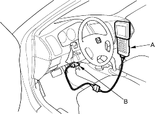
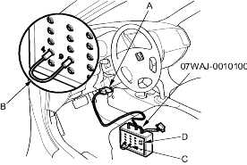
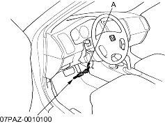

Special Tools Required
- DLC terminal box, 07WAJ-0010100
- SCS short connector, 07PAZ-0010100
The troubleshooting flowchart procedures assume that the cause of the problem is still present and the EPS indicator is still on. Following the flowchart when the EPS indicator does not come on can result in incorrect diagnosis.
The connector illustrations show the female terminal connectors with a single outline and the male terminal connectors with a double outline.
- Question the customer about the conditions when the problem occurred, and try to reproduce the same conditions for troubleshooting. Find out when the EPS indicator came on, such as while turning, after turning, when the vehicle was at a certain speed, etc.
- When the EPS indicator does not come on during the test drive, but troubleshooting is done based on the DTC, check for loose connectors, poor terminal contact, etc., before you start troubleshooting.
- After troubleshooting, clear the DTC and test-drive the vehicle. Be sure the EPS indicator does not come on.
How to Retrieve EPS DTCs
Honda PGM Tester Method:
- With the ignition switch OFF, connect the Honda PGM Tester (A) to the 16P Data Link Connector (DLC) (B) located under the dash on the driver's side of the vehicle.

- Turn the ignition ON (II), and follow the prompts on the PGM Tester to display the DTC(s) on the screen. After determining the DTC, refer to the DTC Troubleshooting Index.
NOTE: See the Honda PGM Tester user's manual for specific instructions.
Service Check Signal Circuit Method:
Except KB, KE, KG, TR models:
- With the ignition switch OFF, connect the DLC terminal box (A) to the Data Link Connector (DLC) (B) located under the dash on the driver's side of the dashboard.

*: The illustration shows LHD model.
- Connect the DLC terminal box terminals No. 4 and No. 9 with a jumper wire (C), then push the switch (D).
- Turn the ignition switch ON (II).
KB, KE, KG, TR models:
- With the ignition switch OFF, connect the SCS short connector to the service check connector (2P) (A) located under the dash on the driver's side of the dashboard.

*: The illustration shows LHD model.